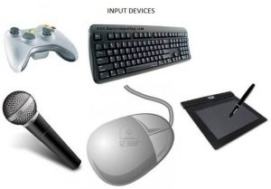

Central Processing unit (CPU)

A CPU is the part of a computer that retrieves and executes instructions. It performs calculations, actions and runs programs. It is often known as the "brain" of the computer.
 An input device is any hardware device that sends signals to a processing system and allows you to interact with it. Common examples include, keyboards, mice and microphones.
An output device is any hardware device that recieves and converts information from a processing system into another form. Some expamples include monitors, speakers, and headphones.
A CPU is the part of a computer that retrieves and executes instructions. It performs calculations, actions and runs programs. It is often known as the "brain" of the computer.

The ALU is the part of the CPU that performs arithmetic logic operations such as OR and AND. It allows computers to perform mathematical operations with binary numbers.
The control unit is a part of the computer's processor, and its function is to convert computer processor's operation instructions into control signals.
RAM is the computer's short-term memory. It is very fast and stores data that the computer needs for a short amount of time, going away when the power turns off.

Optical memory is a type of electronic storage where data from optical media is written and read with a laser. Common examples of optical media include CDs and DVDs.
Magnetic memory is the storage of data on a magnetized medium. It uses magnetisation patterns to store data.

Flash memory is a type of memory that doesn't require power to store data. It is high speed and electrically programmable.
Logic gates are device performing Boolean logic operations on one or more binary inputs that produces a single binary output. They are the basic building blocks of any digital system.